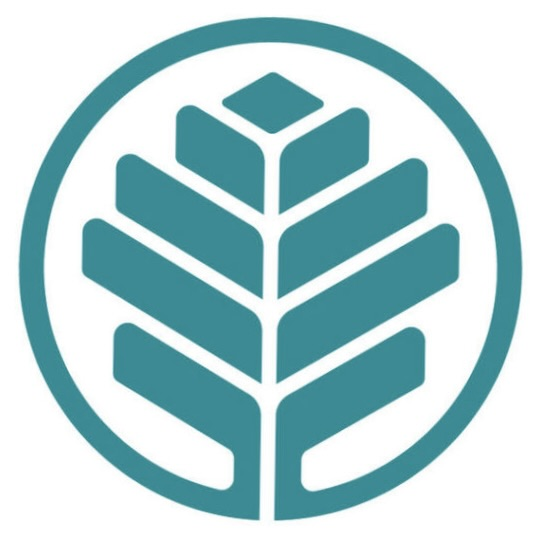

Atrium Health EMG/NCS Learning System
🦶 Sural Nerve Added & Pathway Images! (v2025.12.09 13:15)

ERNEST
Join Ernest on an interactive adventure through the peripheral nervous system. Master complex anatomy, conquer clinical patterns, and build the skills that will help you become a confident electrodiagnostician. Ready to begin your journey?